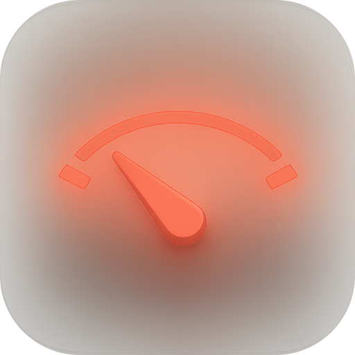
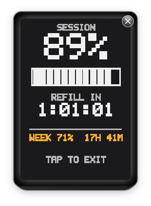
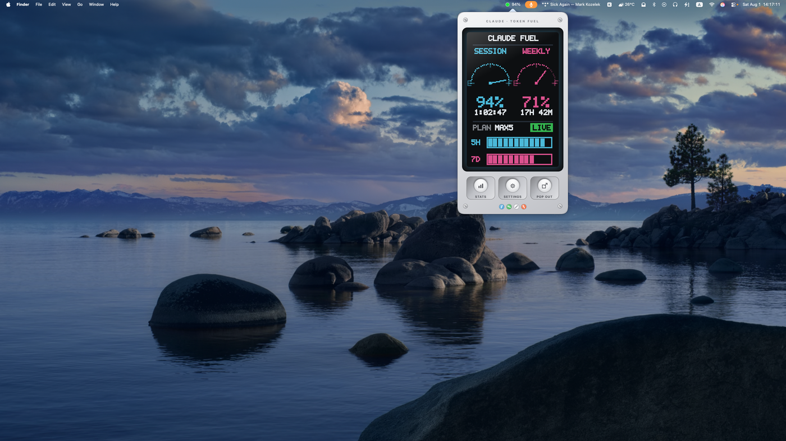
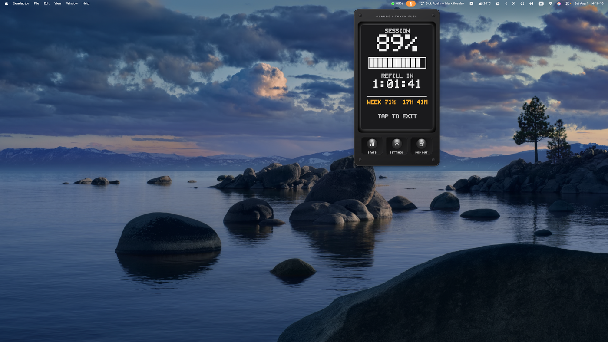

Token Fuel
A menu-bar fuel gauge for your token usage. See how much of your window is left, a live reset countdown, and usage stats.




A menu-bar fuel gauge for your token usage. See how much of your window is left, a live reset countdown, and usage stats.


